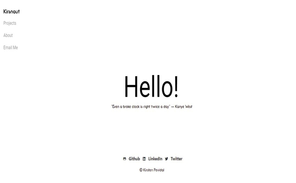

Projects.
✽ 2020 Glassdoor Data Analytics Job in NY State

Analysis of Data Analyst job opening dataset scraped in Glassdoor created.
Purpose: Determine the top sectors & industries in NY State to apply for a Data Analyst role.
Conclusion: A lot of job openings on the Information Technology, Business Services, Healthcare sectors. Top industries are Staffing & Outsourcing, IT Services, and Healthcare Services & Hospitals.
✽ Queens Library Search Engine

Search engine JAVA pplication that can perform online search queries and store it in a persisting Hashmap Database.
Has Account System management(User login and signup), advanced search capabilities, searched-image database, and email reporting. Also can be used thru GUI or CLI.
✽ Shopping Application.
Offline Shopping application that uses text file database. Users can add items listed in the database into a built-in shopping cart. Prints out shopping cart items into a .txt file. Can execute CRUD operations.
✽ Graphing Nodes and Vertices
Graphing application where you can insert vertices and edges in the graph panel. Has features (that works most of the part) like as highlighting connected components, finding articulation vertex, etc.
✽ Natural Language Processing using Machine Learning
College practice works focus in training several language models using Python.
Sample 1: Training several language models and evaluating them on a test corpus.
Sample 2: Using a training corpus "news.crawl" to train model "Word2Vec"
✽ Queens College Course Schema Project
SQL Project recreation of Queens College 2019 Course Catalog from scratch. Has Course Database Schema Diagram.
✽ Search And Engine Website Project
Search Engine Website where users can search terms from websites indexed into a MYSQL Database.
Built using MySQL, Javascript, jQuery AJAX for web crawling and indexing, PHP, Bootstrap framework, & custom CSS.
Has search history and stats (including recent search date, number of results, time to search).
Github Link Here ~
✽ Personal Website
 Personal website created for self-advertisement. Created to demonstrate skills in HTML, CSS, JavaScript, and modified Bootstrap framework.
Github Link Here ~
© Kirsten Pevidal